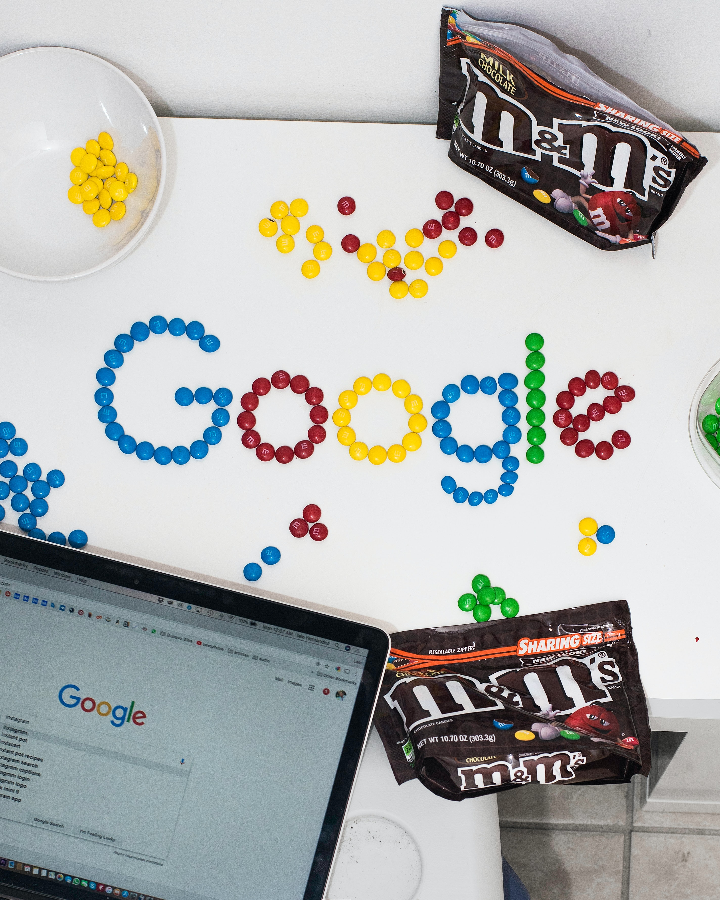

Google is one of my dream company. I believe lots of data scientists want to join Google, just like me. However, people might wonder what I need to acquire to be qualified to work in Google. I create this kernel to answer this question. And hope you enjoy!
Outline Data Cleaning Exploratory Functions for Positions, Tools requirement, Positions Distribution and Job recommendations in the job finding analysis.
The project explores analysis of symptoms, entry and death dates, analysis of Covid Results across gender and analysis of age across age-frequency, gender.
Persons with underlying health conditions or other recognized risk factors for severe outcomes from respiratory infections appear to be at a higher risk for severe disease from COVID-19 than are persons without these conditions.
A medical diagnosis for hearing loss of the patient with relation to under lying causes like age, hearing loss type and severity. A hearing problem is represented in the data as a patient's severity of Hearing Loss" being one of the following values: Slight, Mild, Moderate, Moderately Severe, Severe, or Profound. The analysis is done using SQL and pyspark.
The use and implementation of technology is the solution to the problems occurred in traditional methods of mental monitoring. The research, ‘mental status assessment based on short speech recorded by smartphone’ is divided into two categories for better analysis and results, that is, technology and mental status and mental status assessment using a smartphone’.
A frequently used indicator of liquidity is the churn rate (i.e. the number of times electricity generated in a market is subsequently traded). The churn rate is also calculated as the ratio between the volume of all trades in all timeframes executed in a given market and its total demand.
Given an image or a video, the task is to predict people who are wearing masks and people without masks. The motivation behind this is the current situation of COVID-19. It is a very good real-world problem to be able to detect people wearing face masks.